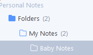
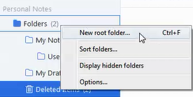
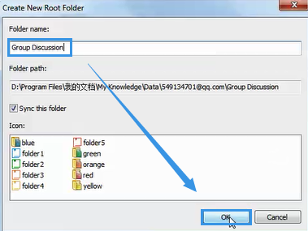

Create a Note Folder
Create a Note Folder
WizNote offers multi-layered folders to help you organize notes.

Right-click "Folder" on the leftmost bar, and select "New root Folder".

Input a name and click "OK".

Right-click the folder to get its subfolder.